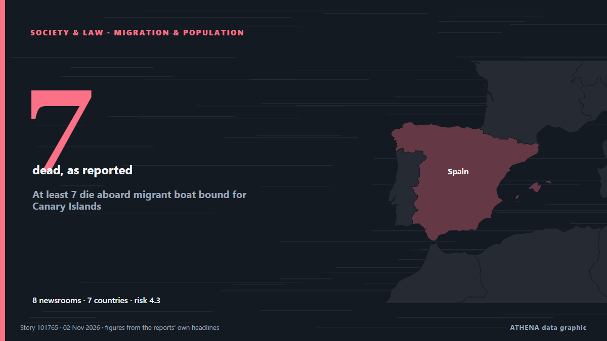

Migración y población
PatrocinadoPresentado por  Cybernetics and Artificial Intelligence Lab Welcome to the Cybernetics and Artificial Intelligence Laboratory, established at the Department of Business Administration of the National
Cybernetics and Artificial Intelligence Lab Welcome to the Cybernetics and Artificial Intelligence Laboratory, established at the Department of Business Administration of the National
| 20 oct | 0 |
|---|---|
| 21 oct | 0 |
| 22 oct | 0 |
| 23 oct | 0 |
| 24 oct | 0 |
| 25 oct | 0 |
| 26 oct | 0 |
| 27 oct | 0 |
| 28 oct | 1 |
| 29 oct | 2 |
| 30 oct | 3 |
| 31 oct | 2 |
| 1 nov | 5 |
| 2 nov | 4 |
Los titulares se muestran en inglés, tal como se publicaron.

At least 7 die aboard migrant boat bound for Canary Islands
Rescuers find 2 bodies aboard boat carrying nearly 140 people, while survivors say 5 others died during journey. de Anadolu Agency (English)
Government has an important reminder for everyone coming to India from abroad
The Bureau of Immigration emphasizes that the Air Suvidha Self-Declaration Form is essential for all air passengers. de Times of India
Latvia reports brief airspace intrusion near Russia, Belarus borders
As Ukraine attacks Russian Baltic Sea oil shipping ports, some of its drones have missed their targets, triggering security warnings in neighbouring countries. de Free Malaysia Today
Passports being issued to evacuated Oleshky residents who lost documents – Vyhivskyi
Employees of the State Migration Service are already issuing Ukrainian passports to evacuated residents of Oleshky who lost all their documents during the occupation. de Ukrinform (English)
An ICE officer is charged with assault for striking a man with a car in Houston
The officer, Mario Alberto Morales, was driving an unmarked SUV on Oct. de PBS NewsHour
Netherlands coast guard rescues 38 people adrift in a rubber boat
Dozens of people adrift at sea in a rubber boat have been rescued off the coast of the southern Netherlands. de ABC News (International)
Headline: Firebomb Attack Targets Thanos Plevris’ Political Office in Athens
Thanos Plevris' political office in Athens' Kolonaki district was targeted in an arson attack at approximately 2:15 am on Sunday. de Greek City Times
IATA Survey: Entry Rules Deter 43% of Travelers as AI, Biometrics Gain Ground
The Astana Times provides news and information from Kazakhstan and around the world. de The Astana Times
Seoul fears being sidelined as US reaches out to North Korea
With ties between South Korea and the Trump administration strained, the South Korean government worries that Donald Trump's pursuit of a diplomatic breakthrough with Kim Jong Un may come at Seoul's… de DW English
UN Refugee Agency Says 9 Million Need Extra Winter Help
The UN refugee agency highlights the need for extra winter assistance for nine million people across Ukraine, Syria, Lebanon, and Afghanistan, seeking $50 million in donations. de Arab News
Gunfire heard across Ethiopia border as growing numbers flee into Kenya
Gunfire echoes across the Ethiopia-Kenya border in Moyale, as violence drives thousands to flee into Kenya. de Africanews (English)